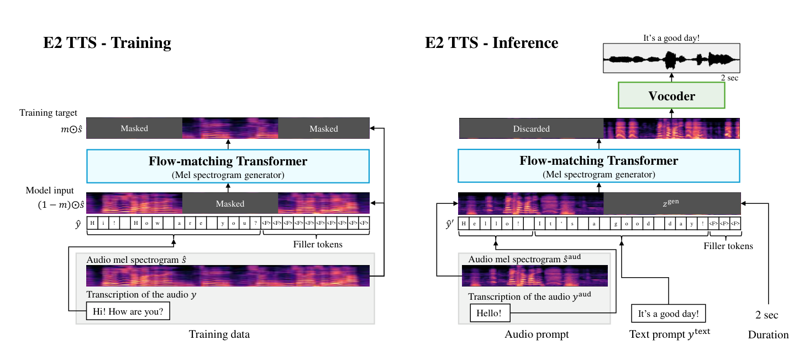
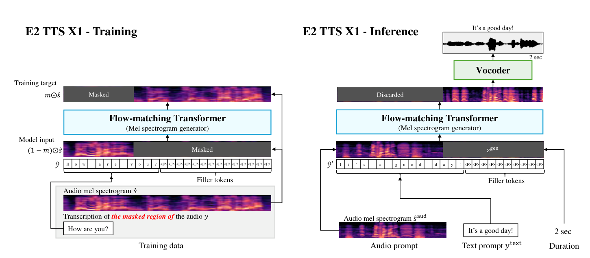
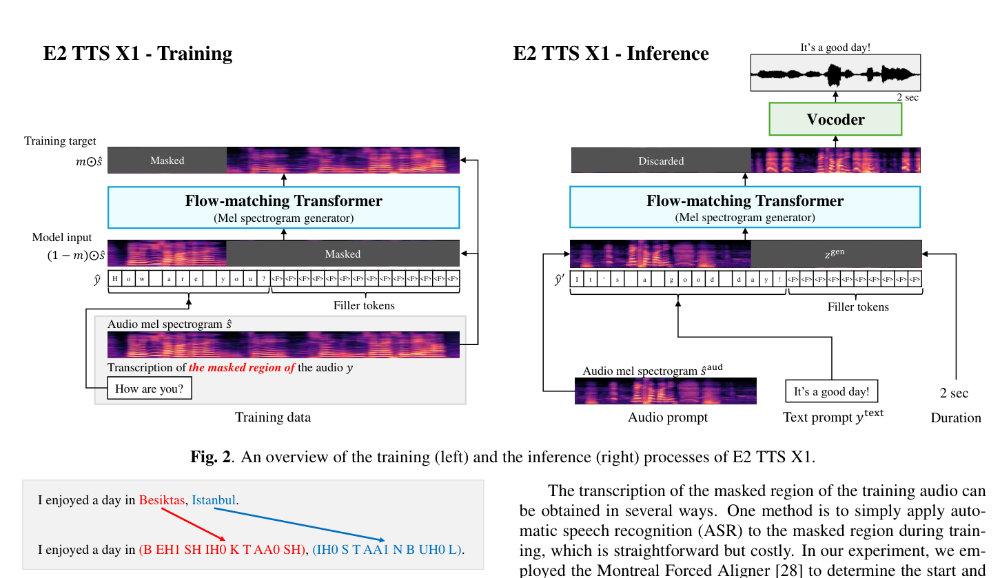
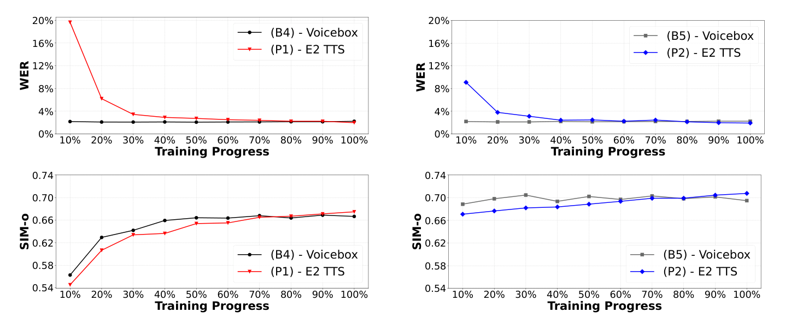
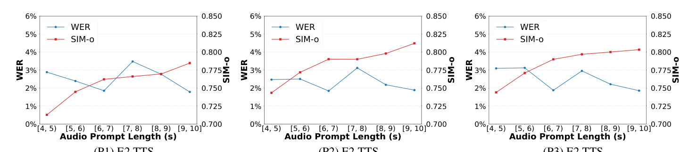
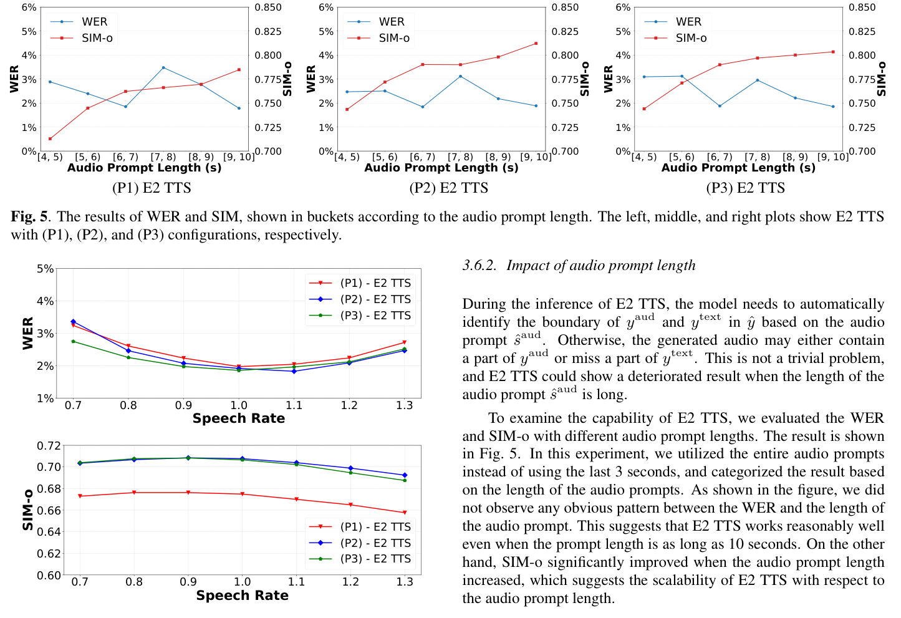

Hemin Yang, Zirun Zhu, Min Tang, Xu Tan, Yanqing Liu, Sheng Zhao, Naoyuki Kanda Microsoft Corporation, USA
摘要ABSTRACT
This paper introduces Embarrassingly Easy Text-to-Speech (E2 TTS), a fully non-autoregressive zero-shot text-to-speech system that offers human-level naturalness and state-of-the-art speaker similarity and intelligibility. In the E2 TTS framework, the text input is converted into a character sequence with filler tokens. The flowmatching-based mel spectrogram generator is then trained based on the audio infilling task. Unlike many previous works, it does not require additional components (e.g., duration model, graphemeto-phoneme) or complex techniques (e.g., monotonic alignment search).
本文介绍 Embarrassingly Easy Text-to-Speech（E2 TTS），一个完全非自回归（NAR）的零样本文本转语音系统，它达到了人类水平的自然度以及最先进的说话人相似度和可懂度。在 E2 TTS 框架中，文本输入被转换成带有填充 token 的字符序列。基于流匹配（flow matching）的 mel 频谱图生成器随后在音频填充（audio infilling）任务上训练。与许多先前工作不同，它不需要额外的组件（例如时长模型、字位到音素转换器）或复杂的技术（例如单调对齐搜索）。
Despite its simplicity, E2 TTS achieves state-of-the-art zero-shot TTS capabilities that are comparable to or surpass previous works, including Voicebox and NaturalSpeech 3. The simplicity of E2 TTS also allows for flexibility in the input representation. We propose several variants of E2 TTS to improve usability during inference. See https://aka.ms/e2tts/ for demo samples.
尽管结构极简，E2 TTS 达到了最先进的零样本 TTS 能力，可与 Voicebox、NaturalSpeech 3 等先前工作相媲美甚至超越它们。E2 TTS 的简洁性还带来了输入表示上的灵活性。我们提出了 E2 TTS 的若干变体，以提升推理时的易用性。演示样例见 https://aka.ms/e2tts/。
Index Terms— zero-shot text-to-speech, flow-matching
关键词——零样本文本转语音、流匹配。
1 1 引言INTRODUCTION
In recent years, text-to-speech (TTS) systems have seen significant improvements [1, 2, 3, 4], achieving a level of naturalness that is indistinguishable from human speech [5]. This advancement has further led to research efforts to generate natural speech for any speaker from a short audio sample, often referred to as an audio prompt. Early studies of zero-shot TTS used speaker embedding to condition the TTS system [6, 7]. More recently, VALL-E [8] proposed formulating the zero-shot TTS problem as a language modeling problem in the neural codec domain, achieving significantly improved speaker similarity while maintaining a simplistic model architecture. Various extensions were proposed to improve stability [9, 10, 11], and VALL-E 2 [12] recently achieved human-level zero-shot TTS with techniques including repetition-aware sampling and grouped code modeling.
近年来，文本转语音（TTS）系统取得了显著进步 [1, 2, 3, 4]，其自然度已达到与人类语音难以区分的水平 [5]。这一进步进一步推动了相关研究：仅凭一小段音频样本（通常称为音频提示）为任意说话人生成自然的语音。早期的零样本 TTS 研究使用说话人嵌入来对 TTS 系统进行条件化 [6, 7]。最近，VALL-E [8] 提出将零样本 TTS 问题表述为神经 codec 域中的语言建模问题，在保持模型架构简洁的同时显著提升了说话人相似度。各种扩展被提出以提升稳定性 [9, 10, 11]，而 VALL-E 2 [12] 最近借助重复感知采样、分组码建模等技术实现了人类水平的零样本 TTS。
While the neural codec language model-based zero-shot TTS achieved promising results, there are still a few limitations based on its auto-regressive (AR) model-based architecture. Firstly, because the codec token needs to be sampled sequentially, it inevitably increases the inference latency. Secondly, a dedicated effort to figure out the best tokenizer (both for text tokens and audio tokens) is necessary to achieve the best quality [9]. Thirdly, it is required to use some tricks to stably handle long sequences of audio codecs, such as the combination of AR and non-autoregressive (NAR) modeling [8, 12], multi-scale transformer [13], grouped code modeling [12].
尽管基于神经 codec 语言模型的零样本 TTS 取得了很有前景的结果，其自回归（AR）模型架构仍存在一些局限。首先，由于 codec token 需要逐个顺序采样，推理延迟不可避免地增加。其次，为了达到最佳质量，需要专门投入精力寻找最优的分词器（包括文本 token 和音频 token）[9]。第三，需要借助一些技巧才能稳定地处理长音频 codec 序列，例如 AR 与非自回归（NAR）建模的组合 [8, 12]、多尺度 Transformer [13]、分组码建模 [12]。
Meanwhile, several fully NAR zero-shot TTS models have been proposed with promising results. Unlike AR-based models, fully NAR models enjoy fast inference based on parallel processing. NaturalSpeech 2 [14] and NaturalSpeech 3 [15] estimate the latent vectors of a neural audio codec based on diffusion models [16, 17].
与此同时，若干完全 NAR 的零样本 TTS 模型也被提出并取得了有前景的结果。与基于 AR 的模型不同，完全 NAR 模型基于并行处理享有快速推理的优势。NaturalSpeech 2 [14] 和 NaturalSpeech 3 [15] 基于扩散模型 [16, 17] 来估计神经音频 codec 的隐向量。
Voicebox [18] and Matcha-TTS [19] used a flow-matching model [20] conditioned by an input text. However, one notable challenge for such NAR models is how to obtain the alignment between the input text and the output audio, whose length is significantly different. NaturalSpeech 2, NaturalSpeech 3, and Voicebox used a framewise phoneme alignment for training the model. Matcha-TTS, on the other hand, used monotonic alignment search (MAS) [21, 3] to automatically find the alignment between input and output. While MAS could alleviate the necessity of the frame-wise phoneme aligner, it still requires an independent duration model to estimate the duration of each phoneme during inference. More recently, E3 TTS [22] proposed using cross-attention from the input sequence, which required a carefully designed U-Net architecture [23]. As such, fully NAR zero-shot TTS models require either an explicit duration model or a carefully designed architecture. One of our findings in this paper is that such techniques are not necessary to achieve high-quality zeroshot TTS, and they are sometimes even harmful to naturalness.1 Another complexity in TTS systems is the choice of the text tokenizer. As discussed above, the AR-model-based system requires a careful selection of tokenizer to achieve the best result. On the other hand, most fully NAR models assume a monotonic alignment between text and output, with the exception of E3 TTS, which uses cross-attention. These models impose constraints on the input format and often require a text normalizer to avoid invalid input formats. When the model is trained based on phonemes, a graphemeto-phoneme converter is additionally required.
Voicebox [18] 和 Matcha-TTS [19] 使用了以输入文本为条件的流匹配模型 [20]。然而，这类 NAR 模型面临的一个显著挑战是：输入文本与输出音频的长度差异很大，如何获得二者之间的对齐。NaturalSpeech 2、NaturalSpeech 3 和 Voicebox 都使用帧级音素对齐来训练模型。Matcha-TTS 则使用单调对齐搜索（MAS）[21, 3] 来自动寻找输入与输出之间的对齐。虽然 MAS 可以省去对帧级音素对齐器的需求，但推理时仍需要一个独立的时长模型来估计每个音素的时长。更近期地，E3 TTS [22] 提出使用来自输入序列的交叉注意力，但这需要一个精心设计的 U-Net 架构 [23]。因此，完全 NAR 的零样本 TTS 模型要么需要显式的时长模型，要么需要精心设计的架构。本文的一个发现是：实现高质量的零样本 TTS 并不需要这些技术，它们有时甚至对自然度有害。TTS 系统的另一个复杂性在于文本分词器的选择。1如上所述，基于 AR 模型的系统需要精心选择分词器才能获得最佳结果。另一方面，大多数完全 NAR 模型假设文本与输出之间存在单调对齐，唯一的例外是使用交叉注意力的 E3 TTS。这些模型对输入格式施加了约束，往往需要文本规范化器来避免非法输入格式。当模型基于音素训练时，还需要额外的字位到音素转换器。
In this paper, we propose Embarrassingly Easy TTS (E2 TTS), a fully NAR zero-shot TTS system with a surprisingly simple architecture. E2 TTS consists of only two modules: a flow-matchingbased mel spectrogram generator and a vocoder. The text input is converted into a character sequence with filler tokens to match the length of the input character sequence and the output mel-filterbank sequence. The mel spectrogram generator, composed of a vanilla Transformer with U-Net style skip connections, is trained using a speech-infilling task [18]. Despite its simplicity, E2 TTS achieves state-of-the-art zero-shot TTS capabilities that are comparable to, or surpass, previous works, including Voicebox and NaturalSpeech 3. The simplicity of E2 TTS also allows for flexibility in the input representation. We propose several variants of E2 TTS to improve usability during inference.
本文提出 Embarrassingly Easy TTS（E2 TTS），一个架构简单到令人惊讶的完全 NAR 零样本 TTS 系统。E2 TTS 只由两个模块组成：一个基于流匹配的 mel 频谱图生成器和一个声码器。文本输入被转换为带填充 token 的字符序列，使输入字符序列与输出 mel 滤波器组序列的长度相匹配。mel 频谱图生成器由带 U-Net 风格跳跃连接的原版 Transformer 构成，通过语音填充任务 [18] 进行训练。尽管结构极简，E2 TTS 达到了最先进的零样本 TTS 能力，可与包括 Voicebox 和 NaturalSpeech 3 在内的先前工作相媲美甚至超越它们。E2 TTS 的简洁性还带来了输入表示上的灵活性。我们提出了 E2 TTS 的若干变体，以提升推理时的易用性。
2 2 E2 TTSE2 TTS
2.1 2.1 训练Training
Fig. 1 (a) provides an overview of E2 TTS training. Suppose we have a training audio sample s with transcription y = (c1, c2, ..., cM), 1Concurrent with our work, Seed-TTS [24] proposed a diffusion modelbased zero-shot TTS, named Seed-TTSDiT. Although it appears to share many similarities with our approach, the authors did not elaborate on the details of their model, making it challenging to compare with our work.
Fig. 1 (a) 给出了 E2 TTS 训练的总览。假设我们有一个训练音频样本 s，其转录为 y = (c1, c2, ..., cM)，1与本文工作同期，Seed-TTS [24] 提出了一个基于扩散模型的零样本 TTS，名为 Seed-TTSDiT。尽管它看起来与我们的方法有许多相似之处，但作者没有详细阐述其模型细节，因此难以与我们的工作进行比较。
E2 TTS - 训练E2 TTS - Training
Training target Masked Masked
训练目标。
𝑚⨀Ƹ𝑠Flow-matching TransformerFlow-matching Transformer
(Mel spectrogram generator) Model input Masked
模型输入。
(1 −𝑚)⨀Ƹ𝑠ො𝑦H i
（图内字符序列示意：H i !）
!H o w a r e y o u
（图内字符序列示意：H o w a r e y o u ?）
?<F> <F> <F> <F> <F> <F> <F> <F> <F> <F> Filler tokens Audio mel spectrogram Ƹ𝑠 Transcription of the audio 𝑦 Hi! How are you?
（图 1(a) 标签：⟨F⟩×10 填充 token（Filler tokens）；音频 mel 频谱图 ŝ；音频转写文本 y「Hi!」。）"How are you?"（图示示例转录文字。）
Training data It’s a good day!
训练数据。
E2 TTS - 推理E2 TTS - Inference
2 sec
（图内时长标注：2 sec。）
声码器Vocoder
Discarded
丢弃。
Flow-matching TransformerFlow-matching Transformer
(Mel spectrogram generator)
（图内模块标签：Mel 频谱生成器。）
𝑧genො𝑦′H e l l o
（图内字符序列示意：H e l l o !）
!I t
（图内字符序列示意：I t ‘ s a g o o d d a y !）
‘s a g o o d d a y
（图内字符序列示意：I t ‘ s a g o o d d a y !）
!<F> <F> <F> Filler tokens Audio mel spectrogram Ƹ𝑠aud Transcription of the audio 𝑦aud Hello!
（图内标签：⟨F⟩×3 填充 token；音频 mel 频谱图 ŝ_aud；音频转写 y_aud「Hello!」。）
It’s a good day!
（图内文本：It's a good day!）
2 sec Audio prompt Text prompt 𝑦text Duration
（图内标签：2 sec；Audio prompt；Text prompt y_text；Duration。）

图Fig. 1. An overview of the training (left) and the inference (right) processes of E2 TTS.
图 1. E2 TTS 训练（左）与推理（右）过程总览。
where ci represents the i-th character of the transcription.2 First, we extract its mel-filterbank features ˆs ∈RD×T , where D denotes the feature dimension and T represents the sequence length. We then create an extended character sequence ˆy, where a special filler token ⟨F⟩is appended to y to make the length of ˆy equal to T.3 ˆy = (c1, c2, . . . , cM, ⟨F⟩, . . . , ⟨F⟩
其中 ci 表示转录中的第 i 个字符。2 首先，我们提取其 mel 滤波器组特征 ŝ ∈ R^(D×T)，其中 D 表示特征维度，T 表示序列长度。随后构造扩展字符序列 ŷ：在 y 后追加特殊填充 token ⟨F⟩，使 ŷ 长度等于 T（脚注 3：ŷ = (c1, c2, …, cM, ⟨F⟩, …, ⟨F⟩)，其中填充段共 (T −M) 个）。
|{z}(T −M) times
随后构造扩展字符序列 ŷ：在 y 后追加特殊填充 token ⟨F⟩，使 ŷ 长度等于 T（脚注 3：ŷ = (c1, c2, …, cM, ⟨F⟩, …, ⟨F⟩)，其中填充段共 (T −M) 个）。
). (1)A spectrogram generator, consisting of a vanilla Transformer [26] with U-net [23] style skip connection, is then trained based on the speech infilling task [18].
随后，一个由带 U-net [23] 风格跳跃连接的原版 Transformer [26] 构成的频谱图生成器，基于语音填充任务 [18] 进行训练。
More specifically, the model is trained to learn the distribution P(m ⊙ˆs|(1 −m) ⊙ˆs, ˆy), where m ∈{0, 1}D×T represents a binary temporal mask, and ⊙is the Hadamard product. E2 TTS uses the conditional flow-matching [20] to learn such distribution.
更具体地说，模型被训练来学习分布 P(m ⊙ ŝ | (1 − m) ⊙ ŝ, ŷ)，其中 m ∈ {0,1}^(D×T) 表示一个二元时间掩码，⊙ 是 Hadamard 积。E2 TTS 使用条件流匹配 [20] 来学习该分布。
2.2 2.2 推理Inference
Fig. 1 (b) provides an overview of the inference with E2 TTS. Suppose we have an audio prompt saud and its transcription yaud = (c′ 1, c′ 2, ..., c′ Maud) to mimic the speaker characteristics. We also suppose a text prompt ytext = (c′′ 1, c′′ 2, ..., c′′ Mtext). In the E2 TTS framework, we also require the target duration of the speech that we want to generate, which may be determined arbitrarily. The target duration is internally represented by the frame length T gen. First, we extract the mel-filterbank features ˆsaud ∈RD×T aud
图 1(b) 给出 E2 TTS 推理过程概览。设有音频提示 s_aud 及其转写 y_aud = (c′1, c′2, …, c′M_aud) 用于模仿说话人特征；另有文本提示 y_text = (c′′1, c′′2, …, c′′M_text)。E2 TTS 框架还需指定目标语音时长，可任意给定，内部以帧长 T_gen 表示。首先从 s_aud 提取 mel 滤波组特征 ŝ_aud ∈ R^{D×T_aud}（式见原文）。
from saud. We then create an extended character sequence ˆy′ by concatenating yaud, ytext, and repeated ⟨F⟩, as follows:
（公式续行：从 s_aud 提取。）将 yaud、ytext 与重复的 ⟨F⟩ 拼接，如下所示：
ˆy′ = (c′ 1, c′
（公式片段：ŷ′ = (c′1, c′2, …（见原文）。）
2, . . . , c′Maud, c′′ 1, c′′2, . . . , c′′Mtext, ⟨F⟩, . . . , ⟨F⟩|{z}T times
（公式片段：M_text 个字符后接 ⟨F⟩×T 填充。）
), (2)where T = T aud+T gen−M aud−M text, which ensures the length of ˆy′ is equal to T aud + T gen.4 2Alternatively, we can represent y as a sequence of Unicode bytes [25].
ŷ′ = (c′1, c′2, ..., c′Maud, c′′2, ..., c′′Mtext, ⟨F⟩, ..., ⟨F⟩（T 次）)，其中 T = Taud + Tgen − Maud − Mtext，这保证了 ŷ′ 的长度等于 Taud + Tgen。4 2或者，我们也可以将 y 表示为 Unicode 字节序列 [25]。
3We assume M ≤T, which is almost always valid. 4To ensure T ≥0, T gen needs to satisfy T gen ≥Maud + Mtext − T aud, which is almost always valid in the TTS scenario.
3我们假设 M ≤ T，这在实际中几乎总是成立。4为保证 T ≥ 0，Tgen 需满足 Tgen ≥ Maud + Mtext − Taud，这在 TTS 场景下几乎总是成立。
The mel spectrogram generator then generates mel-filterbank features ˜s based on the learned distribution of P(˜s|[ˆsaud; zgen], ˆy′), where zgen is an all-zero matrix with a shape of D × T gen, and [; ] is a concatenation operation in the dimension of T ∗. The generated part of ˜s are then converted to the speech signal based on the vocoder.
mel 频谱图生成器随后基于学习到的分布 P(s̃ | [ŝaud; zgen], ŷ′) 生成 mel 滤波器组特征 s̃，其中 zgen 是形状为 D × Tgen 的全零矩阵，[; ] 表示在 T 维度上的拼接操作。s̃ 中生成的部分随后由声码器转换为语音信号。
2.3 2.3 基于流匹配的 mel 频谱图生成器Flow-matching-based mel spectrogram generator
E2 TTS leverages conditional flow-matching [20], which incorporates the principles of continuous normalizing flows [27]. This model operates by transforming a simple initial distribution p0 into a complex target distribution p1 that characterizes the data. The transformation process is facilitated by a neural network, parameterized by θ, which is trained to estimate a time-dependent vector field, denoted as vt(x; θ), for t ∈[0, 1]. From this vector field, we derive a flow, ϕt, which effectively transitions p0 into p1. The neural network’s training is driven by the conditional flow matching objective:
E2 TTS 采用条件流匹配（conditional flow matching）[20]，它融合了连续正则化流（continuous normalizing flows）[27] 的原理。该模型的工作方式是将一个简单的初始分布 p0 变换为刻画数据的复杂目标分布 p1。这一变换过程由一个以 θ 为参数的神经网络实现，它被训练来估计一个随时间变化的向量场，记为 vt(x; θ)，其中 t ∈ [0, 1]。从该向量场出发，我们推导出一个流 ϕt，它有效地将 p0 过渡为 p1。该神经网络的训练由条件流匹配目标驱动：
LCFM(θ) = Et,q(x1),pt(x|x1) ∥ut(x|x1) −vt(x; θ)∥2 , (3)where pt is the probability path at time t, ut is the designated vector field for pt, x1 symbolizes the random variable corresponding to the training data, and q is the distribution of the training data. In the training phase, we construct both a probability path and a vector field from the training data, utilizing an optimal transport path: pt(x|x1) = N(x|tx1, (1 −(1 −σmin)t)2I) and ut(x|x1) = (x1 −(1 −σmin)x)/(1 −(1 −σmin)t). For inference, we apply an ordinary differential equation (ODE) solver [27] to generate the log mel-filterbank features starting from the initial distribution p0.
LCFM(θ) = E_{t,q(x1),pt(x|x1)} ‖ut(x|x1) − vt(x; θ)‖^2，其中 pt 是时刻 t 的概率路径，ut 是为 pt 指定的向量场，x1 表示训练数据对应的随机变量，q 是训练数据的分布。在训练阶段，我们利用最优传输路径从训练数据构造概率路径和向量场：pt(x|x1) = N(x|tx1, (1 − (1 − σmin)t)^2 · I)，ut(x|x1) = (x1 − (1 − σmin)x)/(1 − (1 − σmin)t)。推理时，我们应用常微分方程（ODE）求解器 [27]，从初始分布 p0 出发生成 log mel 滤波器组特征。
We adopt the same model architecture with the audio model of Voicebox (Fig. 2 of [18]) except that the frame-wise phoneme sequence is replaced into ˆy. Specifically, Transformer with U-Net style skip connection [18] is used as a backbone. The input to the mel spectrogram generator is (1 −m) ⊙ˆs, ˆy, the flow step t, and noisy speech st.
我们采用与 Voicebox 音频模型（[18] 中的 Fig. 2）相同的模型架构，只是将帧级音素序列替换为 ŷ。具体来说，使用带 U-Net 风格跳跃连接 [18] 的 Transformer 作为骨干网络。mel 频谱图生成器的输入为 (1 − m) ⊙ ŝ、ŷ、流步 t 和带噪语音 st。
ˆy is first converted to character embedding sequence ˜y ∈RE×T . Then, (1 −m) ⊙ˆs, st, ˜y are all stacked to form a tensor with a shape of (2 · D + E) × T, followed by a linear layer to output a tensor with a shape of D × T. Finally, an embedding representation, ˆt ∈RD, of t is appended to form the input tensor with a shape of RD×(T +1) to the Transformer. The Transformer is
ŷ 首先被转换为字符嵌入序列 ỹ ∈ R^(E×T)。然后，(1 − m) ⊙ ŝ、st、ỹ 被堆叠成一个形状为 (2·D + E) × T 的张量，再经过一个线性层输出形状为 D × T 的张量。最后，将 t 的嵌入表示 t̂ ∈ R^D 追加进去，形成形状为 R^(D×(T+1)) 的输入张量送入 Transformer。该 Transformer 被
声码器E2 TTS X1 - Training
E2 TTS X1 - Inference Training target Masked
（图内标签：E2 TTS X1 - Inference；Training target；Masked。）
𝑚⨀Ƹ𝑠Flow-matching TransformerFlow-matching Transformer
(Mel spectrogram generator) Model input Masked
模型输入。
(1 −𝑚)⨀Ƹ𝑠It’s a good day!
（图内文本：It's a good day!）
2 sec
（图内时长标注：2 sec。）
声码器Vocoder
Discarded
丢弃。
Flow-matching TransformerFlow-matching Transformer
(Mel spectrogram generator)
（图内模块标签：Mel 频谱生成器。）
𝑧genො𝑦′H o w a r e y o u
（图内字符序列示意：H o w a r e y o u ?）
?<F> <F> <F> <F> <F> <F> <F> <F> <F> <F> <F> <F> <F> <F>
<F> <F> <F> <F> <F> <F> <F> <F> <F> <F> <F> <F> <F> <F>（图示填充 token 行。）
ො𝑦Filler tokens Audio mel spectrogram Ƹ𝑠 Transcription of the masked region of the audio 𝑦 How are you?
"How are you?"（图示示例转录文字。）
Training data I t
训练数据。
‘s a g o o d d a y
（图内字符序列示意：I t ‘ s a g o o d d a y !）
!<F> <F> <F> <F> <F> <F> <F> <F> <F> <F> Filler tokens Audio mel spectrogram Ƹ𝑠aud It’s a good day!
（图内标签：⟨F⟩×10 填充 token；音频 mel 频谱图 ŝ_aud；「It's a good day!」。）
2 sec Audio prompt Text prompt 𝑦text Duration
（图内标签：2 sec；Audio prompt；Text prompt y_text；Duration。）

图Fig. 2. An overview of the training (left) and the inference (right) processes of E2 TTS X1.
图 2. E2 TTS X1 训练（左）与推理（右）过程总览。
I enjoyed a day in Besiktas, Istanbul.
"I enjoyed a day in Besiktas, Istanbul."（示例原文，意为"我在伊斯坦布尔的贝西克塔斯度过了愉快的一天"。）
I enjoyed a day in (B EH1 SH IH0 K T AA0 SH), (IH0 S T AA1 N B UH0 L).
"I enjoyed a day in (B EH1 SH IH0 K T AA0 SH), (IH0 S T AA1 N B UH0 L)."（其中括号内为音素序列。）

图Fig. 3. Example of the transcription for E2 TTS X2 where words are replaced with phoneme sequences enclosed in parentheses.
图 3. E2 TTS X2 的转录示例：单词被替换为括号包裹的音素序列。
trained to output a vector field vt with the conditional flow-matching objective LCFM.
被训练为以条件流匹配目标 LCFM 输出向量场 vt。
2.4 2.4 与 Voicebox 的关系Relationship to Voicebox
E2 TTS has a close relationship with the Voicebox. From the perspective of the Voicebox, E2 TTS replaces a frame-wise phoneme sequence used in conditioning with a character sequence that includes a filler token. This change significantly simplifies the model by eliminating the need for a grapheme-to-phoneme converter, a phoneme aligner, and a phoneme duration model. From another viewpoint, the mel spectrogram generator of E2 TTS can be viewed as a joint model of the grapheme-to-phoneme converter, the phoneme duration model, and the audio model of the Voicebox. This joint modeling significantly improves naturalness while maintaining speaker similarity and intelligibility, as will be demonstrated in our experiments.
E2 TTS 与 Voicebox 有着密切的关系。从 Voicebox 的视角看，E2 TTS 将其条件信息中的帧级音素序列替换为包含填充 token 的字符序列。这一改动显著简化了模型：不再需要字位到音素转换器、音素对齐器和音素时长模型。换个视角，E2 TTS 的 mel 频谱图生成器可以看作 Voicebox 的字位到音素转换器、音素时长模型和音频模型的联合模型。这种联合建模显著提升了自然度，同时保持了说话人相似度和可懂度，我们的实验将证明这一点。
2.5 2.5 E2 TTS 的扩展Extension of E2 TTS
2.5.1. Extension 1: Eliminating the need for transcription of audio prompts in inference In certain application contexts, obtaining the transcription of the audio prompt can be challenging. To eliminate the requirement of the transcription of the audio prompt during inference, we introduce an extension, illustrated in Fig. 2. This extension, referred to as E2 TTS X1, assumes that we have access to the transcription of the masked region of the audio, which we use for y. During inference, the extended character sequence ˆy′ is formed without yaud, namely, ˆy′ = (c′′ 1, c′′
2.5.1.扩展 1：消除推理时对音频提示转录的需求。在某些应用场景中，获取音频提示的转录可能比较困难。为了消除推理时对音频提示转录的需求，我们引入了一个扩展，如 Fig. 2 所示。这个被称为 E2 TTS X1 的扩展假设我们可以获取音频中被掩码区域的转录，并将其用作 y。推理时不含 y_aud，直接构造扩展字符序列 ŷ′，即 ŷ′ = (c′′1, c′′2, …,（后接填充）。
2, . . . , c′′Mtext, ⟨F⟩, . . . , ⟨F⟩|{z}T times
（公式片段：M_text 个字符后接 ⟨F⟩×T 填充。）
). (4)The rest of the procedure remains the same as in the basic E2 TTS.
其余流程与基础版 E2 TTS 保持一致。
The transcription of the masked region of the training audio can be obtained in several ways. One method is to simply apply automatic speech recognition (ASR) to the masked region during training, which is straightforward but costly. In our experiment, we employed the Montreal Forced Aligner [28] to determine the start and end times of words within each training data sample. The masked region was determined in such a way that we ensured not to cut the word in the middle.
训练音频被掩码区域的转录可以通过几种方式获得。一种方法是在训练时对被掩码区域直接应用自动语音识别（ASR），这很直接但成本较高。在我们的实验中，我们使用 Montreal Forced Aligner [28] 来确定每个训练数据样本中各单词的起止时间。掩码区域的选取保证不会把单词从中间切断。
2.5.2. Extension 2: Enabling explicit indication of pronunciation for parts of words in a sentence In certain scenarios, users want to specify the pronunciation of a specific word such as unique foreign names. Retraining the model to accommodate such new words is both expensive and time-consuming.
2.5.2.扩展 2：支持显式指定句中部分单词的发音。在某些场景中，用户希望指定特定单词（例如罕见的外国人名）的发音。为适配这类新词而重新训练模型既昂贵又耗时。
To tackle this challenge, we introduce another extension that enables us to indicate the pronunciation of a word during inference. In this extension, referred to as E2 TTS X2, we occasionally substitute a word in y with a phoneme sequence enclosed in parentheses during training, as depicted in Fig. 3. In our implementation, we replaced the word in y with the phoneme sequence from the CMU pronouncing dictionary [29] with a 15% probability. During inference, we simply replace the target word with phoneme sequences enclosed in parentheses.
为应对这一挑战，我们引入了另一个扩展，使我们能够在推理时指定单词的发音。在这个被称为 E2 TTS X2 的扩展中，我们在训练时偶尔将 y 中的某个单词替换为括号包裹的音素序列，如 Fig. 3 所示。在我们的实现中，我们以 15% 的概率将 y 中的单词替换为来自 CMU 发音词典 [29] 的音素序列。推理时，我们只需将目标单词替换为括号包裹的音素序列即可。
It’s important to note that y is still a simple sequence of characters, and whether the character represents a word or a phoneme is solely determined by the existence of parentheses and their content. It’s also noteworthy that punctuation marks surrounding the word are retained during replacement, which allows the model to utilize these punctuation marks even when the word is replaced with phoneme sequences.
需要注意的是，y 仍然是一个简单的字符序列，某个字符表示的是单词还是音素，完全由括号是否存在及其内容决定。同样值得注意的是，替换时单词周围的标点符号会被保留，这使得即使单词被替换为音素序列，模型仍然能利用这些标点符号。
3 3 实验EXPERIMENTS
3.1 3.1 训练数据Training data
We utilized the Libriheavy dataset [30] to train our models. The Libriheavy dataset comprises 50,000 hours of read English speech from 6,736 speakers, accompanied by transcriptions that preserve case and punctuation marks. It is derived from the Librilight [31] dataset contains 60,000 hours of read English speech from over 7,000 speakers. For E2 TTS training, we used the case and punctuated transcription without any pre-processing. We also used a proprietary 200,000 hours of training data to investigate the scalability of the E2 TTS model.
我们使用 Libriheavy 数据集 [30] 训练模型。Libriheavy 数据集包含来自 6,736 位说话人的 50,000 小时朗读英语语音，其转录保留了大小写和标点符号。它源自 Librilight [31] 数据集，后者包含来自 7,000 多位说话人的 60,000 小时朗读英语语音。在 E2 TTS 训练中，我们直接使用带大小写和标点的转录，不做任何预处理。我们还使用了 200,000 小时的专有训练数据，以考察 E2 TTS 模型的可扩展性。
3.2 3.2 模型配置Model configurations
We constructed our proposed E2 TTS models using a Transformer architecture. The architecture incorporated U-Net [23] style skip connections, 24 layers, 16 attention heads, an embedding dimension of 1024, a linear layer dimension of 4096. The character embedding vocabulary size was 399.5 The total number of parameters amounted to 335 million. We modeled the 100-dimensional log mel-filterbank features, extracted every 10.7 milliseconds from audio samples with a 24 kHz sampling rate. A BigVGAN [32]-based vocoder was employed to convert the log mel-filterbank features into waveforms. The masking length was randomly determined to be between 70% and 100% of the log mel-filterbank feature length during training. In addition, we randomly dropped all the conditioning information with a 20% probability for classifier-free guidance (CFG) [33]. All models were trained for 800,000 mini-batch updates with an effective mini-batch size of 307,200 audio frames. We utilized a linear decay learning rate schedule with a peak learning rate of 7.5 × 10−5 and incorporated a warm-up phase for the initial 20,000 updates. We discarded the training samples that exceeded 4,000 frames.
我们基于 Transformer 架构构建了所提出的 E2 TTS 模型。该架构包含 U-Net [23] 风格的跳跃连接、24 层、16 个注意力头、嵌入维度 1024、线性层维度 4096。字符嵌入词表大小为 399.5（抽取残留，原文如此：词表 399 + 脚注标记 5）。总参数量为 3.35 亿（335 million）。我们对 100 维 log mel 滤波器组特征建模，音频采样率为 24 kHz，每 10.7 毫秒提取一帧特征。采用基于 BigVGAN [32] 的声码器将 log mel 滤波器组特征转换为波形。训练时，掩码长度随机确定为 log mel 滤波器组特征长度的 70% 到 100% 之间。此外，我们以 20% 的概率随机丢弃所有条件信息，用于无分类器引导（CFG）[33]。所有模型训练了 800,000 次 mini-batch 更新，有效 mini-batch 大小为 307,200 个音频帧。我们使用线性衰减学习率调度，峰值学习率为 7.5 × 10−5，并在最初的 20,000 次更新中加入预热阶段。我们丢弃了超过 4,000 帧的训练样本。
In a subset of our experiments, we initialized E2 TTS models using a pre-trained model in an unsupervised manner.
在部分实验中，我们以无监督方式使用预训练模型初始化 E2 TTS 模型。
This pretraining was conducted on an anonymized dataset, which consisted of 200,000 hours of unlabeled data. The pre-training protocol, which involved 800,000 mini-batch updates, followed the scheme outlined in [34].
该预训练在一个匿名数据集上进行，包含 200,000 小时无标注数据。预训练遵循 [34] 中概述的方案，包含 800,000 次 mini-batch 更新。
In addition, we trained a regression-based duration model by following that of Voicebox [18]. It is based on a Transformer architecture, consisting of 8 layers, 8 attention heads, an embedding dimension of 512, a linear layer dimension of 2048. The training process involved 75,000 mini-batch updates with 120,000 frames. We used this duration model to estimate the target duration for a fair comparison with the Voicebox baseline. Note that we will also show that E2 TTS is robust for different target duration in Section 3.6.
此外，我们仿照 Voicebox [18] 训练了一个基于回归的时长模型。它基于 Transformer 架构，包含 8 层、8 个注意力头、嵌入维度 512、线性层维度 2048。训练过程包含 75,000 次 mini-batch 更新，共 120,000 帧。我们使用该时长模型来估计目标时长，以便与 Voicebox 基线进行公平比较。请注意，我们还将在 Section 3.6 中展示 E2 TTS 对不同的目标时长具有鲁棒性。
3.3 3.3 评测数据与指标Evaluation data and metrics
In order to assess our models, we utilized the test-clean subset of the LibriSpeech-PC dataset [35], which is an extension of LibriSpeech [36] that includes additional punctuation marks and casing.
为了评估我们的模型，我们使用了 LibriSpeech-PC 数据集 [35] 的 test-clean 子集，该数据集是 LibriSpeech [36] 的扩展，包含了额外的标点符号和大小写。
We specifically filtered the samples to retain only those with a duration between 4 and 10 seconds. Since LibriSpeech-PC lacks some of the utterances from LibriSpeech, the total number of samples was reduced to 1,132, sourced from 39 speakers. For the audio prompt, we extracted the last three seconds from a randomly sampled speech file from the same speaker for each evaluation sample.6 We carried out both objective and subjective evaluations. For the objective evaluations, we generated samples using three random seeds, computed the objective metrics for each, and then calculated their average. We computed the word error rate (WER) and speaker similarity (SIM-o). The WER is indicative of the intelligibility of the generated samples, and for its calculation, we utilized a Hubert-large-based [37] ASR system. The SIM-o represents the speaker similarity between the audio prompt and the generated sample, which is estimated by computing the cosine similarity between the speaker embeddings of both. For the calculation of SIM-o, we used a WavLM-large-based [38] speaker verification model.
我们专门筛选了样本，只保留时长在 4 到 10 秒之间的样本。由于 LibriSpeech-PC 缺少 LibriSpeech 中的部分语句，样本总数减少至 1,132 条，来自 39 位说话人。对于每个评测样本的音频提示，我们从同一说话人的随机采样语音文件中提取最后 3 秒。6 我们进行了客观评测和主观评测。在客观评测中，我们用 3 个随机种子生成样本，分别计算客观指标，然后取平均。我们计算了词错误率（WER）和说话人相似度（SIM-o）。WER 反映生成样本的可懂度，计算时我们使用了基于 Hubert-large [37] 的 ASR 系统。SIM-o 表示音频提示与生成样本之间的说话人相似度，通过计算两者说话人嵌入的余弦相似度来估计。在计算 SIM-o 时，我们使用了基于 WavLM-large [38] 的说话人验证模型。
5We used all characters and symbols that we found in the training data without filtering.
5我们使用的是训练数据中出现的所有字符和符号，不做任何过滤。
6The test set used in our experiments can be accessed at: https:// github.com/microsoft/e2tts-test-suite.
6我们实验中使用的测试集可在以下地址获取：https://github.com/microsoft/e2tts-test-suite。
Table 1. Objective results for LibriSpeech-PC test-clean evaluation set. WER is expressed in percentage. † Our reproduction. LL, LH, and PP stand for Librilight, Libriheavy, and Proprietary, respectively.
Table 1. LibriSpeech-PC test-clean 评测集的客观结果。WER 以百分比表示。† 我们的复现。LL、LH、PP 分别表示 Librilight、Libriheavy 和专有数据（Proprietary）。
IDID
Model Data (hours) Init WER↓SIM-o↑ (GT) Ground Truth
表头：Model / Data (hours) / Init / WER↓ / SIM-o↑——(GT) Ground Truth（后续照原文）。
- - 2.0 0.695(B1) VALL-E [8] LL (60K) Random4.9 0.500(B2) NaturalSpeech 3 [15] LL (60K) Random2.6 0.632(B3) Voicebox [18]† LL (60K) Random2.1 0.658(B4) Voicebox [18]† LH (50K) Random2.2 0.667(B5) Voicebox [18]† LH (50K) Pretrain [34]2.2 0.695(P1) E2 TTS LH (50K) Random2.0 0.675(P2) E2 TTS LH (50K) Pretrain [34]1.9 0.708(P3) E2 TTS PP (200K) Random1.9 0.707Table 2. Subjective results for LibriSpeech-PC test-clean evaluation set. † Our reproduction.
Table 2. LibriSpeech-PC test-clean 评测集的主观结果。† 我们的复现。
IDID
Model CMOS↑ SMOS↑ (GT) Ground Truth
（表：Model × CMOS↑ × SMOS↑——(GT) Ground Truth 0.00/3.91±0.13；(B2) NaturalSpeech 3 [15] -0.98/4.76±0.06；(B4) Voicebox [18]† -0.78/4.73±0.06；(P1) E2 TTS -0.14/4.66±0.07；(P2) E2 TTS -0.05/4.65±0.08；(P3) E2 TTS -0.18/4.64±0.08。）主观评测包含两项：比较平均意见分（CMOS）与说话人相似度平均意见分（SMOS）。
0.00 3.91±0.13(B2) NaturalSpeech 3 [15]-0.98 4.76±0.06(B4) Voicebox [18]†-0.78 4.73±0.06(P1) E2 TTS-0.14 4.66±0.07(P2) E2 TTS-0.05 4.65±0.08(P3) E2 TTS-0.18 4.64±0.08For the subjective assessments, we conducted two tests: the Comparative Mean Opinion Score (CMOS) and the Speaker Similarity Mean Opinion Score (SMOS). We evaluated 39 samples for both tests, with one sample per speaker from our test-clean set. Each sample was assessed by 12 Native English evaluators. In the CMOS test [15], evaluators were shown the ground-truth sample and the generated sample side-by-side without knowing which was the ground-truth, and were asked to rate the naturalness on a 7-point scale (from -3 to 3), where a negative value indicates a preference for the ground-truth and a positive value indicates the opposite. In the SMOS test, evaluators were presented with the audio prompt and the generated sample, and asked to rate the speaker similarity on a scale of 1 (not similar at all) to 5 (identical), with increments of 1.
（表：Model × CMOS↑ × SMOS↑——(GT) Ground Truth 0.00/3.91±0.13；(B2) NaturalSpeech 3 [15] -0.98/4.76±0.06；(B4) Voicebox [18]† -0.78/4.73±0.06；(P1) E2 TTS -0.14/4.66±0.07；(P2) E2 TTS -0.05/4.65±0.08；(P3) E2 TTS -0.18/4.64±0.08。）主观评测包含两项：比较平均意见分（CMOS）与说话人相似度平均意见分（SMOS）。两项测试各评测 39 个样本，每个样本来自我们 test-clean 集中的一位说话人。每个样本由 12 位以英语为母语的评测者评分。在 CMOS 测试 [15] 中，评测者并排看到真实样本与生成样本，但不知道哪个是真实样本，并被要求在 7 分制（-3 到 3）上评价自然度，负值表示偏好真实样本，正值表示相反。在 SMOS 测试中，评测者看到音频提示和生成样本，并被要求按 1（完全不相似）到 5（完全相同）的尺度评价说话人相似度，步长为 1。
3.4 3.4 主要结果Main results
In our experiments, we conducted a comparison between our E2 TTS models and three other models: Voicebox [18], VALL-E [8], and NaturalSpeech 3 [15]. We utilized our own reimplementation of the Voicebox model, which was based on the same model configuration with E2 TTS except that the Vicebox model is trained with frame-wise phoneme alignment. During the inference, we used CFG with a guidance strength of 1.0 for both E2 TTS and Voicebox. We employed the midpoint ODE solver with a number of function evaluations of 32.
在实验中，我们将 E2 TTS 模型与另外三个模型进行了比较：Voicebox [18]、VALL-E [8] 和 NaturalSpeech 3 [15]。我们使用了我们自己重新实现的 Voicebox 模型，它与 E2 TTS 采用相同的模型配置，只是 Voicebox 模型使用帧级音素对齐进行训练。推理时，我们对 E2 TTS 和 Voicebox 都使用 CFG，引导强度为 1.0。我们采用中点 ODE 求解器，函数评估次数（NFE）为 32。
Table 1 presents the objective evaluation results for the baseline and E2 TTS models across various configurations. By comparing the (B4) and (P1) systems, we observe that the E2 TTS model achieved better WER and SIM-o than the Voicebox model when both were trained on the Libriheavy dataset. This trend holds even when we initialize the model with unsupervised pre-training [34] ((B5) vs. (P2)), where the (P2) system achieved the best WER (1.9%) and SIM-o (0.708) which are better than those of the ground-truth audio. Finally, by using larger training data (P3), E2 TTS achieved the same best WER (1.9%) and the second best SIM-o (0.707) even when the model is trained from scratch, showcasing the scalability of E2 TTS. (B4) - Voicebox (P1) - E2 TTS
表 1 给出基线与 E2 TTS 模型在多种配置下的客观评测结果。对比 (B4) 与 (P1) 系统可见，同样在 Libriheavy 数据集上训练时，E2 TTS 的 WER 与 SIM-o 优于 Voicebox。即使用无监督预训练初始化 [34]（(B5) vs. (P2)），这一趋势依然成立：(P2) 系统取得最佳 WER (1.9%) 与 SIM-o (0.708)，甚至优于真实音频。最后，使用更大训练数据 (P3) 时，即使从头训练，E2 TTS 也取得相同的最佳 WER (1.9%) 与第二好的 SIM-o (0.707)，展示了其可扩展性。（图例：(B4) - Voicebox / (P1) - E2 TTS。）
16% 12%WER8% 4% 0% 10% 20% 30% 40% 50% 60% 70% 80% 90% 100%Training Progress0.74 0.70 0.66SIM-o0.62(B4) - Voicebox (P1) - E2 TTS0.58 0.54 10% 20% 30% 40% 50% 60% 70% 80% 90% 100%Training Progress (B5) - Voicebox (P2) - E2 TTS
（图横轴：Training Progress（训练进度）；图例：(B5) - Voicebox / (P2) - E2 TTS。）
16% 12%WER8% 4% 0% 10% 20% 30% 40% 50% 60% 70% 80% 90% 100%Training Progress0.74 0.70 0.66SIM-o0.62(B5) - Voicebox (P2) - E2 TTS0.58 0.54 10% 20% 30% 40% 50% 60% 70% 80% 90% 100%Training Progress
（图横轴：Training Progress（训练进度）。）

图Fig. 4. The training progress of Voicebox and E2TTS models. The top row shows WER and the bottom row shows SIM progressions.
图 4. Voicebox 和 E2 TTS 模型的训练过程。上排为 WER，下排为 SIM 的变化曲线。
Table 3. Comparison between the basic E2 TTS and E2 TTS X1. While the basic E2 TTS requires the transcription of the audio prompt during inference, E2 TTS X1 does not require it. WER is expressed in percentage.
Table 3. 基础版 E2 TTS 与 E2 TTS X1 的比较。基础版 E2 TTS 在推理时需要音频提示的转录，E2 TTS X1 则不需要。WER 以百分比表示。
| (P1) | E2 TTS | Random | 2.0 | 0.675 | ID | Model | Init | Phoneme % | WER↓ | SIM-o↑ | ||
| (P2) | E2 TTS | Pre-trained [34] | 1.9 | 0.708 | (P1) | E2 TTS | Random | 0% | 2.0 | 0.675 | ||
| (P1-X1) | E2 TTS X1 | Random | 2.0 | 0.664 | 0% | 2.0 | 0.679 | |||||
| (P2-X1) | E2 TTS X1 | Pre-trained [34] | 2.0 | 0.705 | (P1-X2) | E2 TTS X2 | Random | 25% | 2.0 | 0.678 | ||
| 50% | 2.1 | 0.679 |
IDID
It is noteworthy that E2 TTS achieved superior performance compared to all strong baselines, including VALL-E, NaturalSpeech 3, and Voicebox, despite its extremely simple framework.
（表：Model × Init × WER↓ × SIM-o↑——(P1) E2 TTS 随机初始化 2.0/0.675；(P2) E2 TTS 预训练 [34] 1.9/0.708；(P1-X1) E2 TTS X1 随机 2.0/0.664；(P2-X1) E2 TTS X1 预训练 [34] 2.0/0.705。）值得注意的是，尽管框架极其简单，E2 TTS 仍超过了 VALL-E、NaturalSpeech 3、Voicebox 等所有强基线。
Table 2 illustrated the subjective evaluation results for NaturalSpeech 3, Voicebox, and E2 TTS. Firstly, all variants of E2 TTS, from (P1) to (P3), showed a better CMOS score compared to NaturalSpeech 3 and Voicebox. In particular, the (P2) model achieved a CMOS score of -0.05, which is considered to have a level of naturalness indistinguishable from the ground truth [15, 24].7 The comparison between (B4) and (P1) suggests that the use of phoneme alignment was the major bottleneck in achieving better naturalness. Regarding speaker similarity, all the models we tested showed a better SMOS compared to the ground truth, a phenomenon also observed in NaturalSpeech 3 [15].8 Among the tested systems, E2 TTS achieved a comparable SMOS to Voicebox and NaturalSpeech 3.
Table 2 展示了 NaturalSpeech 3、Voicebox 和 E2 TTS 的主观评测结果。首先，E2 TTS 的所有变体（从 (P1) 到 (P3)）的 CMOS 分数都优于 NaturalSpeech 3 和 Voicebox。特别是，(P2) 模型取得了 -0.05 的 CMOS 分数，这被认为达到了与真实样本难以区分的自然度水平 [15, 24]。7 (B4) 与 (P1) 的比较表明，使用音素对齐是实现更高自然度的主要瓶颈。关于说话人相似度，我们测试的所有模型的 SMOS 都优于真实样本，NaturalSpeech 3 [15] 中也观察到了这一现象。8 在所测系统中，E2 TTS 取得了与 Voicebox 和 NaturalSpeech 3 相当的 SMOS。
Overall, E2 TTS demonstrated a robust zero-shot TTS capability that is either superior or comparable to strong baselines, including Voicebox and NaturalSpeech 3. The comparison between Voicebox and E2 TTS revealed that the use of phoneme alignment was the primary obstacle in achieving natural-sounding audio. With a simple training scheme, E2 TTS can be easily scaled up to accommodate large training data. This resulted in human-level speaker similarity, intelligibility, and a level of naturalness that is indistinguishable from a human’s voice in the zero-shot TTS setting, despite the framework’s extreme simplicity.
总体而言，E2 TTS 展示了鲁棒的零样本 TTS 能力，优于或可比于 Voicebox、NaturalSpeech 3 等强基线。Voicebox 与 E2 TTS 的比较表明，使用音素对齐是实现自然听感音频的主要障碍。凭借简单的训练方案，E2 TTS 可以轻松扩展以适配大规模训练数据。这使得在零样本 TTS 设定下达到了人类水平的说话人相似度、可懂度，以及与人类语音难以区分的自然度——尽管该框架极其简单。
7In the evaluation, E2 TTS was judged to be better in 33% of samples, while the ground truth was better in another 33% of samples. The remaining samples were judged to be of equal quality.
7在评测中，E2 TTS 在 33% 的样本上被评为更好，真实样本在另外 33% 的样本上被评为更好。其余样本被评为质量相当。
8In LibriSpeech, some speakers utilized varying voice characteristics for different characters in the book, leading to a low SMOS for the ground truth.
8在 LibriSpeech 中，一些说话人为书中的不同角色使用了不同的声音特征，导致真实样本的 SMOS 偏低。
Table 4. The WER (%) and SIM-o of E2 TTS X2 where a word is randomly replaced with the phoneme sequence during inference. Even when we replaced 50% of words into phoneme sequences, E2 TTS X2 worked reasonably well. This indicates that we can specify the pronunciation of a new term without retraining.
Table 4. E2 TTS X2 的 WER（%）与 SIM-o：推理时随机将单词替换为音素序列。即使我们把 50% 的单词替换为音素序列，E2 TTS X2 仍能正常工作。这表明我们可以在不重新训练的情况下指定新术语的发音。
| (P1) | E2 TTS | Random | 2.0 | 0.675 | ID | Model | Init | Phoneme % | WER↓ | SIM-o↑ | ||
| (P2) | E2 TTS | Pre-trained [34] | 1.9 | 0.708 | (P1) | E2 TTS | Random | 0% | 2.0 | 0.675 | ||
| (P1-X1) | E2 TTS X1 | Random | 2.0 | 0.664 | 0% | 2.0 | 0.679 | |||||
| (P2-X1) | E2 TTS X1 | Pre-trained [34] | 2.0 | 0.705 | (P1-X2) | E2 TTS X2 | Random | 25% | 2.0 | 0.678 | ||
| 50% | 2.1 | 0.679 |
IDID
3.5 3.5 E2 TTS 扩展的评测Evaluation of E2 TTS extensions
3.5.1. Evaluation of the extension 1 The results for the E2 TTS X1 models are shown in Table 3. These results indicate that the E2 TTS X1 model has achieved results nearly identical to those of the E2 TTS model, especially when the model was initialized by unsupervised pre-training [34]. E2 TTS X1 does not require the transcription of the audio prompt, which greatly enhances its usability.
3.5.1.扩展 1 的评测。E2 TTS X1 模型的结果见 Table 3。这些结果表明，E2 TTS X1 模型取得了与 E2 TTS 模型几乎相同的结果，尤其是在模型由无监督预训练 [34] 初始化时。E2 TTS X1 不需要音频提示的转录，这极大地增强了其易用性。
3.5.2. Evaluation of the extension 2 In this experiment, we trained the E2 TTS X2 models with a phoneme replacement rate of 15%. During inference, we randomly replaced words in the test-clean dataset with phoneme sequences, with a probability ranging from 0% to 50%.
3.5.2.扩展 2 的评测。在本实验中，我们以 15% 的音素替换率训练 E2 TTS X2 模型。推理时，我们以 0% 到 50% 的概率随机将 test-clean 数据集中的单词替换为音素序列。
Table 4 shows the result. We first observed that E2 TTS X2 achieved parity results when no words were replaced with phoneme sequences. This shows that we can introduce extension 2 without any drawbacks. We also observed that the E2 TTS X2 model showed only marginal degradation of WER, even when we replaced 50% of words with phoneme sequences. This result indicates that we can specify the pronunciation of a new term without retraining the E2 TTS model.
Table 4 展示了结果。我们首先观察到，当没有单词被替换为音素序列时，E2 TTS X2 取得了与基础版持平的结果。这表明我们可以在不带来任何损失的情况下引入扩展 2。我们还观察到，即使将 50% 的单词替换为音素序列，E2 TTS X2 模型的 WER 也只有轻微下降。该结果表明，我们可以在不重新训练 E2 TTS 模型的情况下指定新术语的发音。
0.850SIM-o SIM-o0.825 4% 0.800 4%SIM-o WER WER3% 0.775 3% 2% 0.750 2% 1% 0.725 1% 0.850 0.850SIM-o0.825 0.825 0.800 4% 0.800SIM-o SIM-o WER0.775 3% 0.775 0.750 2% 0.750 0.725 1% 0.725 [4, 5) [5, 6) [6, 7) [7, 8) [8, 9) [9, 10]Audio Prompt Length (s)0% 0.700 0% [4, 5) [5, 6) [6, 7) [7, 8) [8, 9) [9, 10]Audio Prompt Length (s)0.700 0% 0.700 [4, 5) [5, 6) [6, 7) [7, 8) [8, 9) [9, 10]Audio Prompt Length (s) (P2) E2 TTS (P1) E2 TTS (P3) E2 TTS
（图横轴：Audio Prompt Length (s)；图例：(P2) E2 TTS / (P1) E2 TTS / (P3) E2 TTS。）

图Fig. 5. The results of WER and SIM, shown in buckets according to the audio prompt length. The left, middle, and right plots show E2 TTS with (P1), (P2), and (P3) configurations, respectively.
图 5. 按音频提示长度分桶展示的 WER 和 SIM 结果。左、中、右图分别为 (P1)、(P2)、(P3) 配置下的 E2 TTS。
5%(P1) - E2 TTS (P2) - E2 TTS (P3) - E2 TTS
（图例：(P1) - E2 TTS / (P2) - E2 TTS / (P3) - E2 TTS。）
4%WER3% 2% 1% 0.7 0.8 0.9 1.0 1.1 1.2 1.3Speech Rate0.72 0.70 0.68SIM-o0.66(P1) - E2 TTS (P2) - E2 TTS (P3) - E2 TTS
（图例：(P1) - E2 TTS / (P2) - E2 TTS / (P3) - E2 TTS。）
0.64 0.62 0.60 0.7 0.8 0.9 1.0 1.1 1.2 1.3Speech Rate
（图纵轴：Speech Rate（语速）。）

图Fig. 6. WER and SIM-o of different speech rates between 0.7 to 1.3 for E2TTS with (P1), (P2), and (P3) configurations.
图 6. 在 (P1)、(P2)、(P3) 配置下，语速在 0.7 到 1.3 之间变化时 E2 TTS 的 WER 和 SIM-o。
3.6 3.6 系统行为分析Analysis of the system behavior
3.6.1. Training progress
3.6.1.训练过程。
Fig. 4 illustrates the training progress of the (B4)-Voicebox, (B5)- Voicebox, (P1)-E2 TTS, and (P2)-E2 TTS models. The upper graphs represent the training progress as measured by WER, while the lower graphs depict the progress as measured by SIM-o. We present a comparison between (B4)-Voicebox and (P1)-E2 TTS, as well as between (B5)-Voicebox and (P2)-E2 TTS. The former pair was trained from scratch, while the latter was initialized by unsupervised pretraining [34]. From the WER graphs, we observe that the Voicebox models demonstrated a good WER even at the 10% training point, owing to the use of frame-wise phoneme alignment. On the other hand, E2 TTS required significantly more training to converge. Interestingly, E2 TTS achieved a better WER at the end of the training. We speculate this is because the E2 TTS model learned a more effective grapheme-to-phoneme mapping based on the large training data, compared to what was used for Voicebox. From the SIM-o graphs, we also observed that E2 TTS required more training iteration, but it ultimately achieved a better result at the end of the training. We believe this suggests the superiority of E2 TTS, where the audio model and duration model are jointly learned as a single flow-matching Transformer.
图 4 展示了 (B4)-Voicebox、(B5)-Voicebox、(P1)-E2 TTS 和 (P2)-E2 TTS 模型的训练过程。上方图表以 WER 衡量训练进程，下方图表以 SIM-o 衡量。我们比较了 (B4)-Voicebox 与 (P1)-E2 TTS，以及 (B5)-Voicebox 与 (P2)-E2 TTS。前一对从头训练，后一对由无监督预训练 [34] 初始化。从 WER 图可见，得益于帧级音素对齐，Voicebox 模型在训练到 10% 时就已表现出良好的 WER。另一方面，E2 TTS 需要明显更多的训练才能收敛。有趣的是，E2 TTS 在训练结束时取得了更好的 WER。我们推测这是因为 E2 TTS 模型基于大规模训练数据学到了比 Voicebox 所用方式更有效的字位到音素映射。从 SIM-o 图也观察到，E2 TTS 需要更多训练迭代，但最终取得了更好的结果。我们认为这表明 E2 TTS 的优越性：音频模型和时长模型以单一流匹配 Transformer 的形式联合学习。
3.6.2. Impact of audio prompt length During the inference of E2 TTS, the model needs to automatically identify the boundary of yaud and ytext in ˆy based on the audio prompt ˆsaud. Otherwise, the generated audio may either contain a part of yaud or miss a part of ytext. This is not a trivial problem, and E2 TTS could show a deteriorated result when the length of the audio prompt ˆsaud is long.
3.6.2.音频提示长度的影响。在 E2 TTS 推理过程中，模型需要基于音频提示 ŝaud 自动识别 ŷ 中 yaud 与 ytext 的边界。否则，生成的音频可能会包含 yaud 的一部分，或者缺少 ytext 的一部分。这不是一个简单的问题，当音频提示 ŝaud 较长时，E2 TTS 的结果可能会变差。
To examine the capability of E2 TTS, we evaluated the WER and SIM-o with different audio prompt lengths. The result is shown in Fig. 5. In this experiment, we utilized the entire audio prompts instead of using the last 3 seconds, and categorized the result based on the length of the audio prompts. As shown in the figure, we did not observe any obvious pattern between the WER and the length of the audio prompt. This suggests that E2 TTS works reasonably well even when the prompt length is as long as 10 seconds. On the other hand, SIM-o significantly improved when the audio prompt length increased, which suggests the scalability of E2 TTS with respect to the audio prompt length.
为了考察 E2 TTS 的能力，我们在不同音频提示长度下评测了 WER 和 SIM-o。结果见 Fig. 5。在本实验中，我们使用完整的音频提示而不是最后 3 秒，并按音频提示长度对结果分类。如图所示，我们没有观察到 WER 与音频提示长度之间有任何明显的规律。这表明即使提示长度达到 10 秒，E2 TTS 也能正常工作。另一方面，当音频提示长度增加时，SIM-o 显著提升，这说明 E2 TTS 在音频提示长度上具有可扩展性。
3.6.3. Impact of changing the speech rate We further examined the model’s ability to produce suitable content when altering the total duration input. In this experiment, we adjusted the total duration by multiplying it by
3.6.3.改变语速的影响。我们进一步考察了模型在改变总时长输入时生成合适内容的能力。在本实验中，我们通过将总时长乘以 1/sr 来调整它，其中 sr 表示语速。
1sr , where sr represents the speech rate. The results are shown in Fig. 6. As depicted in the graphs, the E2 TTS model exhibited only a moderate increase in WER while maintaining a high SIM-o, even in the challenging cases of sr = 0.7 and sr = 1.3. This result suggests the robustness of E2 TTS with respect to the total duration input.
在本实验中，我们通过将总时长乘以 1/sr 来调整它，其中 sr 表示语速。结果见 Fig. 6。如图所示，即使在 sr = 0.7 和 sr = 1.3 这样有挑战性的情况下，E2 TTS 模型的 WER 也只是适度上升，同时保持了较高的 SIM-o。该结果表明 E2 TTS 对总时长输入具有鲁棒性。
4 4 结论CONCLUSIONS
We introduced E2 TTS, a novel fully NAR zero-shot TTS. In the E2 TTS framework, the text input is converted into a character sequence with filler tokens to match the length of the input character sequence and the output mel-filterbank sequence. The flow-matching-based mel spectrogram generator is then trained based on the audio infilling task. Despite its simplicity, E2 TTS achieved state-of-the-art zero-shot TTS capabilities that were comparable to or surpass previous works, including Voicebox and NaturalSpeech 3. The simplicity of E2 TTS also allowed for flexibility in the input representation. We proposed several variants of E2 TTS to improve usability during inference.
我们提出了 E2 TTS，一个新颖的完全 NAR 零样本 TTS。在 E2 TTS 框架中，文本输入被转换为带填充 token 的字符序列，使输入字符序列与输出 mel 滤波器组序列的长度相匹配。基于流匹配的 mel 频谱图生成器随后在音频填充任务上训练。尽管结构简单，E2 TTS 达到了最先进的零样本 TTS 能力，可与包括 Voicebox 和 NaturalSpeech 3 在内的先前工作相媲美甚至超越它们。E2 TTS 的简洁性还带来了输入表示上的灵活性。我们提出了 E2 TTS 的若干变体，以提升推理时的易用性。
5 5 参考文献REFERENCES
[1] Yi Ren, Yangjun Ruan, Xu Tan, Tao Qin, Sheng Zhao, Zhou Zhao, and Tie-Yan Liu, “FastSpeech: Fast, robust and controllable text to speech,” Proc. NeurIPS, vol. 32, 2019.
[1] Yi Ren, Yangjun Ruan, Xu Tan, Tao Qin, Sheng Zhao, Zhou Zhao, and Tie-Yan Liu, “FastSpeech: Fast, robust and controllable text to speech,” Proc.NeurIPS, vol. 32, 2019.
[2] Yi Ren, Chenxu Hu, Xu Tan, Tao Qin, Sheng Zhao, Zhou Zhao, and Tie-Yan Liu, “FastSpeech 2: Fast and high-quality end-toend text to speech,” in Proc. ICLR, 2021.
[2] Yi Ren, Chenxu Hu, Xu Tan, Tao Qin, Sheng Zhao, Zhou Zhao, and Tie-Yan Liu, “FastSpeech 2: Fast and high-quality end-toend text to speech,” in Proc.ICLR, 2021.
[3] Jaehyeon Kim, Sungwon Kim, Jungil Kong, and Sungroh Yoon, “Glow-TTS: A generative flow for text-to-speech via monotonic alignment search,” Proc. NeurIPS, vol. 33, pp.
[3] Jaehyeon Kim, Sungwon Kim, Jungil Kong, and Sungroh Yoon, “Glow-TTS: A generative flow for text-to-speech via monotonic alignment search,” Proc.NeurIPS, vol. 33, pp.
8067–8077, 2020.[4] Jungil Kong, Jaehyeon Kim, and Jaekyoung Bae, “HiFi-GAN: Generative adversarial networks for efficient and high fidelity speech synthesis,” Proc. NeurIPS, vol. 33, pp. 17022–17033,
[4] Jungil Kong, Jaehyeon Kim, and Jaekyoung Bae, “HiFi-GAN: Generative adversarial networks for efficient and high fidelity speech synthesis,” Proc.NeurIPS, vol. 33, pp. NeurIPS, vol. 33, pp. 17022–17033,
2020.[5] Xu Tan, Jiawei Chen, Haohe Liu, Jian Cong, Chen Zhang, Yanqing Liu, Xi Wang, Yichong Leng, Yuanhao Yi, Lei He, et al., “Naturalspeech: End-to-end text-to-speech synthesis with human-level quality,” IEEE Transactions on Pattern Analysis and Machine Intelligence, 2024.
[5] Xu Tan, Jiawei Chen, Haohe Liu, Jian Cong, Chen Zhang, Yanqing Liu, Xi Wang, Yichong Leng, Yuanhao Yi, Lei He, et al., “Naturalspeech: End-to-end text-to-speech synthesis with human-level quality,” IEEE Transactions on Pattern Analysis and Machine Intelligence, 2024.
[6] Sercan Arik, Jitong Chen, Kainan Peng, Wei Ping, and Yanqi Zhou, “Neural voice cloning with a few samples,” Proc.
[6] Sercan Arik, Jitong Chen, Kainan Peng, Wei Ping, and Yanqi Zhou, “Neural voice cloning with a few samples,” Proc.
NeurIPS, vol. 31, 2018.
NeurIPS, vol. 31, 2018.
[7] Ye Jia, Yu Zhang, Ron Weiss, Quan Wang, Jonathan Shen, Fei Ren, Patrick Nguyen, Ruoming Pang, Ignacio Lopez Moreno, Yonghui Wu, et al., “Transfer learning from speaker verification to multispeaker text-to-speech synthesis,” Proc. NeurIPS, vol. 31, 2018.
[7] Ye Jia, Yu Zhang, Ron Weiss, Quan Wang, Jonathan Shen, Fei Ren, Patrick Nguyen, Ruoming Pang, Ignacio Lopez Moreno, Yonghui Wu, et al., “Transfer learning from speaker verification to multispeaker text-to-speech synthesis,” Proc.NeurIPS, vol. 31, 2018.
[8] Chengyi Wang, Sanyuan Chen, Yu Wu, Ziqiang Zhang, Long Zhou, Shujie Liu, Zhuo Chen, Yanqing Liu, Huaming Wang, Jinyu Li, et al., “Neural codec language models are zero-shot text to speech synthesizers,” arXiv preprint arXiv:2301.02111,
[8] Chengyi Wang, Sanyuan Chen, Yu Wu, Ziqiang Zhang, Long Zhou, Shujie Liu, Zhuo Chen, Yanqing Liu, Huaming Wang, Jinyu Li, et al., “Neural codec language models are zero-shot text to speech synthesizers,” arXiv preprint arXiv:2301.02111, 2023.
2023.[9] Xiaofei Wang, Manthan Thakker, Zhuo Chen, Naoyuki Kanda, Sefik Emre Eskimez, Sanyuan Chen, Min Tang, Shujie Liu, Jinyu Li, and Takuya Yoshioka, “Speechx: Neural codec language model as a versatile speech transformer,” arXiv preprint arXiv:2308.06873, 2023.
[9] Xiaofei Wang 等，「SpeechX: Neural codec language model as a versatile speech transformer」，arXiv:2308.06873，2023。（参考文献，照录）
[10] Chenpeng Du, Yiwei Guo, Hankun Wang, Yifan Yang, Zhikang Niu, Shuai Wang, Hui Zhang, Xie Chen, and Kai Yu, “Vall-t: Decoder-only generative transducer for robust and decoding-controllable text-to-speech,” arXiv preprint arXiv:2401.14321, 2024.
[10] Chenpeng Du 等，「VALL-T: Decoder-only generative transducer for robust and decoding-controllable text-to-speech」，arXiv:2401.14321，2024。（参考文献，照录）
[11] Detai Xin, Xu Tan, Kai Shen, Zeqian Ju, Dongchao Yang, Yuancheng Wang, Shinnosuke Takamichi, Hiroshi Saruwatari, Shujie Liu, Jinyu Li, et al., “RALL-E: Robust codec language modeling with chain-of-thought prompting for text-to-speech synthesis,” arXiv preprint arXiv:2404.03204, 2024.
[9] Xiaofei Wang, Manthan Thakker, Zhuo Chen, Naoyuki Kanda, Sefik Emre Eskimez, Sanyuan Chen, Min Tang, Shujie Liu, Jinyu Li, and Takuya Yoshioka, “Speechx: Neural codec language model as a versatile speech transformer,” arXiv preprint [10] Chenpeng Du, Yiwei Guo, Hankun Wang, Yifan Yang, Zhikang Niu, Shuai Wang, Hui Zhang, Xie Chen, and Kai Yu, “Vall-t: Decoder-only generative transducer for robust and decoding-controllable text-to-speech,” arXiv preprint [11] Detai Xin, Xu Tan, Kai Shen, Zeqian Ju, Dongchao Yang, Yuancheng Wang, Shinnosuke Takamichi, Hiroshi Saruwatari, Shujie Liu, Jinyu Li, et al., “RALL-E: Robust codec language modeling with chain-of-thought prompting for text-to-speech synthesis,” arXiv preprint arXiv:2404.03204, 2024.
[12] Sanyuan Chen, Shujie Liu, Long Zhou, Yanqing Liu, Xu Tan, Jinyu Li, Sheng Zhao, Yao Qian, and Furu Wei, “VALL- E 2: Neural Codec Language Models are Human Parity Zero-Shot Text to Speech Synthesizers,” arXiv preprint arXiv:2402.07383, 2024. [13] Dongchao Yang, Jinchuan Tian, Xu Tan, Rongjie Huang, Songxiang Liu, Xuankai Chang, Jiatong Shi, Sheng Zhao, Jiang Bian, Xixin Wu, et al., “Uniaudio: An audio foundation model toward universal audio generation,” arXiv preprint arXiv:2310.00704, 2023.
[12] Sanyuan Chen 等，「VALL-E 2: Neural Codec Language Models are Human Parity Zero-Shot Text to Speech Synthesizers」，arXiv:2402.07383，2024。（参考文献，照录）[13] Dongchao Yang 等，「UniAudio: An audio foundation model toward universal audio generation」，arXiv:2310.00704，2023。（参考文献，照录）
[14] Kai Shen, Zeqian Ju, Xu Tan, Yanqing Liu, Yichong Leng, Lei He, Tao Qin, Sheng Zhao, and Jiang Bian, “NaturalSpeech 2: Latent diffusion models are natural and zero-shot speech and singing synthesizers,” arXiv preprint arXiv:2304.09116, 2023. [15] Zeqian Ju, Yuancheng Wang, Kai Shen, Xu Tan, Detai Xin, Dongchao Yang, Yanqing Liu, Yichong Leng, Kaitao Song, Siliang Tang, et al., “Naturalspeech 3: Zero-shot speech synthesis with factorized codec and diffusion models,” arXiv preprint arXiv:2403.03100, 2024. [16] Jonathan Ho, Ajay Jain, and Pieter Abbeel, “Denoising diffusion probabilistic models,” in Proc. NIPS, 2020, vol. 33, pp.
[12] Sanyuan Chen, Shujie Liu, Long Zhou, Yanqing Liu, Xu Tan, Jinyu Li, Sheng Zhao, Yao Qian, and Furu Wei, “VALL- E 2: Neural Codec Language Models are Human Parity Zero-Shot Text to Speech Synthesizers,” arXiv preprint [13] Dongchao Yang, Jinchuan Tian, Xu Tan, Rongjie Huang, Songxiang Liu, Xuankai Chang, Jiatong Shi, Sheng Zhao, Jiang Bian, Xixin Wu, et al., “Uniaudio: An audio foundation model toward universal audio generation,” arXiv preprint [14] Kai Shen, Zeqian Ju, Xu Tan, Yanqing Liu, Yichong Leng, Lei He, Tao Qin, Sheng Zhao, and Jiang Bian, “NaturalSpeech 2: Latent diffusion models are natural and zero-shot speech and singing synthesizers,” arXiv preprint arXiv:2304.09116, 2023.[15] Zeqian Ju, Yuancheng Wang, Kai Shen, Xu Tan, Detai Xin, Dongchao Yang, Yanqing Liu, Yichong Leng, Kaitao Song, Siliang Tang, et al., “Naturalspeech 3: Zero-shot speech synthesis with factorized codec and diffusion models,” arXiv preprint arXiv:2403.03100, 2024.[16] Jonathan Ho, Ajay Jain, and Pieter Abbeel, “Denoising diffusion probabilistic models,” in Proc.NIPS, 2020, vol. 33, pp.
6840–6851.[17] Yang Song, Jascha Sohl-Dickstein, Diederik P Kingma, Abhishek Kumar, Stefano Ermon, and Ben Poole, “Score-based generative modeling through stochastic differential equations,” in Proc. ICML, 2020. [18] Matthew Le, Apoorv Vyas, Bowen Shi, Brian Karrer, Leda Sari, Rashel Moritz, Mary Williamson, Vimal Manohar, Yossi Adi, Jay Mahadeokar, et al., “Voicebox: Text-guided multilingual universal speech generation at scale,” Advances in neural information processing systems, vol. 36, 2024. [19] Shivam Mehta, Ruibo Tu, Jonas Beskow, ´Eva Sz´ekely, and Gustav Eje Henter, “Matcha-TTS: A fast TTS architecture with conditional flow matching,” in Proc. ICASSP. IEEE, 2024, pp.
[17] Yang Song, Jascha Sohl-Dickstein, Diederik P Kingma, Abhishek Kumar, Stefano Ermon, and Ben Poole, “Score-based generative modeling through stochastic differential equations,” in Proc.ICML, 2020.[18] Matthew Le, Apoorv Vyas, Bowen Shi, Brian Karrer, Leda Sari, Rashel Moritz, Mary Williamson, Vimal Manohar, Yossi Adi, Jay Mahadeokar, et al., “Voicebox: Text-guided multilingual universal speech generation at scale,” Advances in neural information processing systems, vol. 36, 2024.[19] Shivam Mehta, Ruibo Tu, Jonas Beskow, ´Eva Sz´ekely, and Gustav Eje Henter, “Matcha-TTS: A fast TTS architecture with conditional flow matching,” in Proc.ICASSP.IEEE, 2024, pp.
11341–11345.[20] Yaron Lipman, Ricky TQ Chen, Heli Ben-Hamu, Maximilian Nickel, and Matthew Le, “Flow matching for generative modeling,” in Proc. ICLR, 2022. [21] Vadim Popov, Ivan Vovk, Vladimir Gogoryan, Tasnima Sadekova, and Mikhail Kudinov, “Grad-TTS: A diffusion probabilistic model for text-to-speech,” in Proc. ICML, 2021, pp. 8599–8608. [22] Yuan Gao, Nobuyuki Morioka, Yu Zhang, and Nanxin Chen, “E3 TTS: Easy end-to-end diffusion-based text to speech,” in 2023 IEEE Automatic Speech Recognition and Understanding Workshop (ASRU). IEEE, 2023, pp. 1–8. [23] Olaf Ronneberger, Philipp Fischer, and Thomas Brox, “U-net: Convolutional networks for biomedical image segmentation,” in Proc. MICCAI. Springer, 2015, pp. 234–241. [24] Philip Anastassiou, Jiawei Chen, Jitong Chen, Yuanzhe Chen, Zhuo Chen, Ziyi Chen, Jian Cong, Lelai Deng, Chuang Ding, Lu Gao, et al., “Seed-TTS: A Family of HighQuality Versatile Speech Generation Models,” arXiv preprint arXiv:2406.02430, 2024. [25] Bo Li, Yu Zhang, Tara Sainath, Yonghui Wu, and William Chan, “Bytes are all you need: End-to-end multilingual speech recognition and synthesis with bytes,” in Proc. ICASSP, 2019, pp. 5621–5625. [26] Ashish Vaswani, Noam Shazeer, Niki Parmar, Jakob Uszkoreit, Llion Jones, Aidan N Gomez, Lukasz Kaiser, and Illia Polosukhin, “Attention is all you need,” Proc. NIPS, vol. 30,
[20] Yaron Lipman, Ricky TQ Chen, Heli Ben-Hamu, Maximilian Nickel, and Matthew Le, “Flow matching for generative modeling,” in Proc.ICLR, 2022.[21] Vadim Popov, Ivan Vovk, Vladimir Gogoryan, Tasnima Sadekova, and Mikhail Kudinov, “Grad-TTS: A diffusion probabilistic model for text-to-speech,” in Proc.ICML, 2021, pp. 8599–8608.[22] Yuan Gao, Nobuyuki Morioka, Yu Zhang, and Nanxin Chen, “E3 TTS: Easy end-to-end diffusion-based text to speech,” in 2023 IEEE Automatic Speech Recognition and Understanding Workshop (ASRU).IEEE, 2023, pp. 1–8.[23] Olaf Ronneberger, Philipp Fischer, and Thomas Brox, “U-net: Convolutional networks for biomedical image segmentation,” in Proc.MICCAI.Springer, 2015, pp. 234–241.[24] Philip Anastassiou 等，「Seed-TTS: A Family of High-Quality Versatile Speech Generation Models」，arXiv:2406.02430，2024。（参考文献，照录）[24] Philip Anastassiou, Jiawei Chen, Jitong Chen, Yuanzhe Chen, Zhuo Chen, Ziyi Chen, Jian Cong, Lelai Deng, Chuang Ding, Lu Gao, et al., “Seed-TTS: A Family of HighQuality Versatile Speech Generation Models,” arXiv preprint [25] Bo Li, Yu Zhang, Tara Sainath, Yonghui Wu, and William Chan, “Bytes are all you need: End-to-end multilingual speech recognition and synthesis with bytes,” in Proc.ICASSP, 2019, pp. 5621–5625.[26] Ashish Vaswani, Noam Shazeer, Niki Parmar, Jakob Uszkoreit, Llion Jones, Aidan N Gomez, Lukasz Kaiser, and Illia Polosukhin, “Attention is all you need,” Proc.NIPS, vol. 30, 2017.
2017.[27] Ricky TQ Chen, Yulia Rubanova, Jesse Bettencourt, and David K Duvenaud, “Neural ordinary differential equations,” in Proc. NeurIPS, 2018, vol. 31. [28] Michael McAuliffe, Michaela Socolof, Sarah Mihuc, Michael Wagner, and Morgan Sonderegger, “Montreal forced aligner: Trainable text-speech alignment using kaldi.,” in Proc. Interspeech, 2017, pp. 498–502.
[27] Ricky TQ Chen, Yulia Rubanova, Jesse Bettencourt, and David K Duvenaud, “Neural ordinary differential equations,” in Proc.NeurIPS, 2018, vol. 31.[28] Michael McAuliffe, Michaela Socolof, Sarah Mihuc, Michael Wagner, and Morgan Sonderegger, “Montreal forced aligner: Trainable text-speech alignment using kaldi.,” in Proc.Interspeech, 2017, pp. 498–502.
[29] Kevin Lenzo, “The carnegie mellon university pronouncing dictionary,” .
[29] Kevin Lenzo, “The carnegie mellon university pronouncing dictionary,” .
[30] Wei Kang, Xiaoyu Yang, Zengwei Yao, Fangjun Kuang, Yifan Yang, Liyong Guo, Long Lin, and Daniel Povey, “LibriHeavy: a 50,000 hours ASR corpus with punctuation casing and context,” in Proc. ICASSP. IEEE, 2024, pp. 10991–10995.
[30] Wei Kang, Xiaoyu Yang, Zengwei Yao, Fangjun Kuang, Yifan Yang, Liyong Guo, Long Lin, and Daniel Povey, “LibriHeavy: a 50,000 hours ASR corpus with punctuation casing and context,” in Proc.ICASSP.IEEE, 2024, pp. 10991–10995.
[31] Jacob Kahn, Morgane Rivi`ere, Weiyi Zheng, Evgeny Kharitonov, Qiantong Xu, Pierre-Emmanuel Mazar´e, Julien Karadayi, Vitaliy Liptchinsky, Ronan Collobert, Christian Fuegen, et al., “Libri-light: A benchmark for ASR with limited or no supervision,” in Proc. ICASSP, 2020, pp. 7669–7673.
[31] Jacob Kahn, Morgane Rivi`ere, Weiyi Zheng, Evgeny Kharitonov, Qiantong Xu, Pierre-Emmanuel Mazar´e, Julien Karadayi, Vitaliy Liptchinsky, Ronan Collobert, Christian Fuegen, et al., “Libri-light: A benchmark for ASR with limited or no supervision,” in Proc.ICASSP, 2020, pp. 7669–7673.
[32] Sang-gil Lee, Wei Ping, Boris Ginsburg, Bryan Catanzaro, and Sungroh Yoon, “BigVGAN: A universal neural vocoder with large-scale training,” in Proc. ICLR, 2022.
[32] Sang-gil Lee, Wei Ping, Boris Ginsburg, Bryan Catanzaro, and Sungroh Yoon, “BigVGAN: A universal neural vocoder with large-scale training,” in Proc.ICLR, 2022.
[33] Jonathan Ho and Tim Salimans, “Classifier-free diffusion guidance,” arXiv preprint arXiv:2207.12598, 2022.
[33] Jonathan Ho and Tim Salimans, “Classifier-free diffusion guidance,” arXiv preprint arXiv:2207.12598, 2022.
[34] Xiaofei Wang, Sefik Emre Eskimez, Manthan Thakker, Hemin Yang, Zirun Zhu, Min Tang, Yufei Xia, Jinzhu Li, Sheng Zhao, Jinyu Li, and Naoyuki Kanda, “An investigation of noise robustness for flow-matching-based zero-shot TTS,” in Proc. Interspeech, 2024.
[34] Xiaofei Wang, Sefik Emre Eskimez, Manthan Thakker, Hemin Yang, Zirun Zhu, Min Tang, Yufei Xia, Jinzhu Li, Sheng Zhao, Jinyu Li, and Naoyuki Kanda, “An investigation of noise robustness for flow-matching-based zero-shot TTS,” in Proc.Interspeech, 2024.
[35] Aleksandr Meister, Matvei Novikov, Nikolay Karpov, Evelina Bakhturina, Vitaly Lavrukhin, and Boris Ginsburg, “LibriSpeech-PC: Benchmark for evaluation of punctuation and capitalization capabilities of end-to-end asr models,” in Proc. ASRU. IEEE, 2023, pp. 1–7.
[35] Aleksandr Meister, Matvei Novikov, Nikolay Karpov, Evelina Bakhturina, Vitaly Lavrukhin, and Boris Ginsburg, “LibriSpeech-PC: Benchmark for evaluation of punctuation and capitalization capabilities of end-to-end asr models,” in Proc.ASRU.IEEE, 2023, pp. 1–7.
[36] Vassil Panayotov, Guoguo Chen, Daniel Povey, and Sanjeev Khudanpur, “LibriSpeech: an ASR corpus based on public domain audio books,” in Proc. ICASSP, 2015, pp. 5206–5210.
[36] Vassil Panayotov, Guoguo Chen, Daniel Povey, and Sanjeev Khudanpur, “LibriSpeech: an ASR corpus based on public domain audio books,” in Proc.ICASSP, 2015, pp. 5206–5210.
[37] Wei-Ning Hsu, Benjamin Bolte, Yao-Hung Hubert Tsai, Kushal Lakhotia, Ruslan Salakhutdinov, and Abdelrahman Mohamed, “HuBERT: Self-supervised speech representation learning by masked prediction of hidden units,” IEEE/ACM Transactions on Audio, Speech, and Language Processing, vol.
[37] Wei-Ning Hsu, Benjamin Bolte, Yao-Hung Hubert Tsai, Kushal Lakhotia, Ruslan Salakhutdinov, and Abdelrahman Mohamed, “HuBERT: Self-supervised speech representation learning by masked prediction of hidden units,” IEEE/ACM Transactions on Audio, Speech, and Language Processing, vol.
29, pp. 3451–3460, 2021.[38] Sanyuan Chen, Chengyi Wang, Zhengyang Chen, Yu Wu, Shujie Liu, Zhuo Chen, Jinyu Li, Naoyuki Kanda, Takuya Yoshioka, Xiong Xiao, et al., “WavLM: Large-scale self-supervised pre-training for full stack speech processing,” IEEE Journal of Selected Topics in Signal Processing, vol. 16, no. 6, pp. 1505–
[38] Sanyuan Chen, Chengyi Wang, Zhengyang Chen, Yu Wu, Shujie Liu, Zhuo Chen, Jinyu Li, Naoyuki Kanda, Takuya Yoshioka, Xiong Xiao, et al., “WavLM: Large-scale self-supervised pre-training for full stack speech processing,” IEEE Journal of Selected Topics in Signal Processing, vol. 16, no. 6, pp. 1505– 1518, 2022.
1518, 2022.